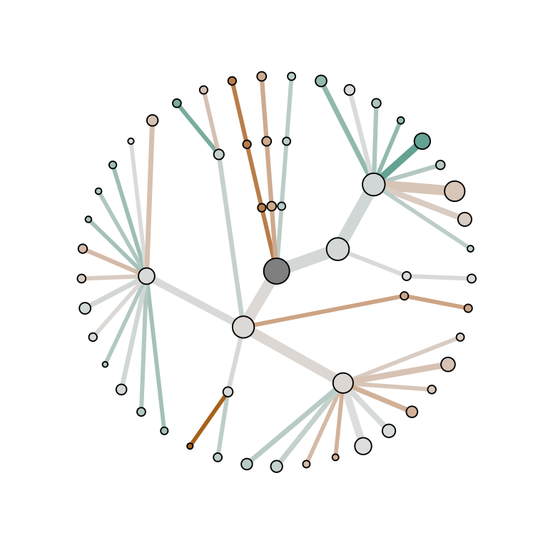
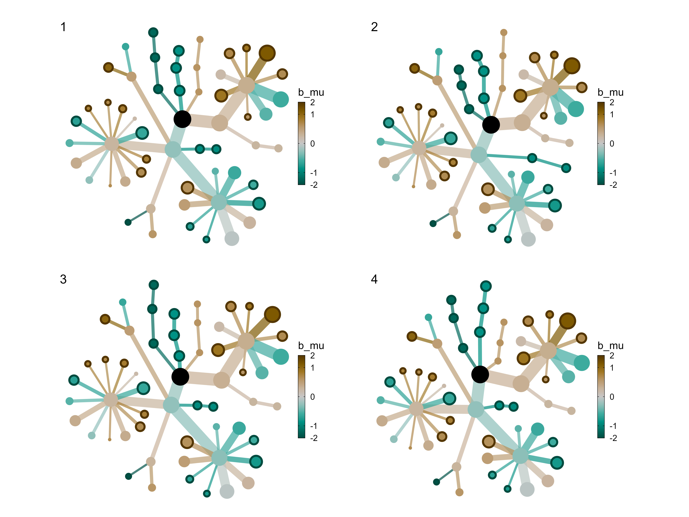
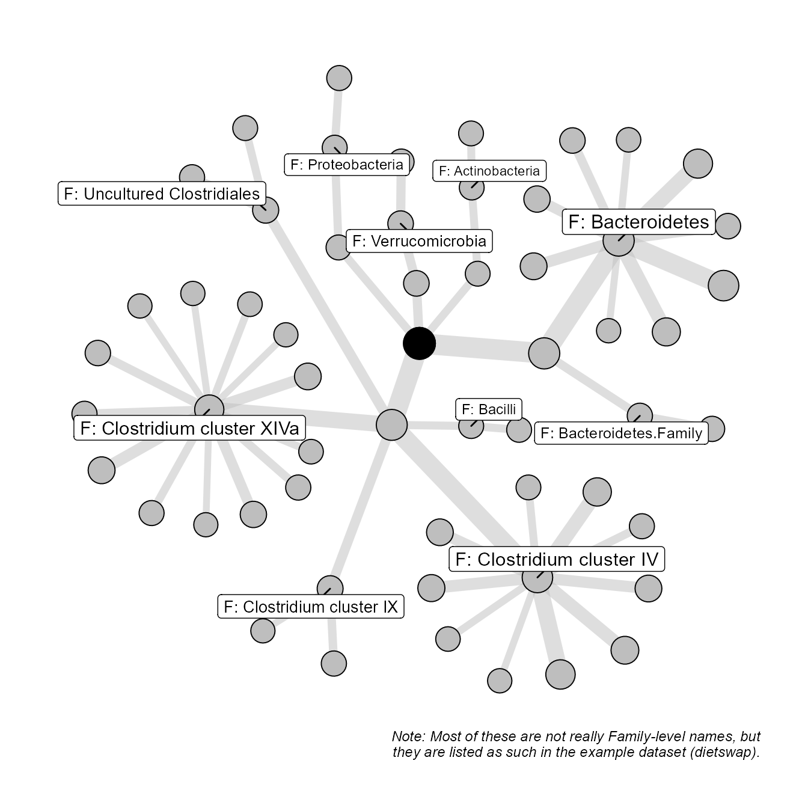

options(width = 100)
library(microViz)
library(microbiome)
library(igraph)
library(tidygraph)
library(ggraph)
library(patchwork)
library(dplyr)
library(tibble)
library(corncob)
library(future)
library(future.apply)
library(colorspace)
knitr::opts_chunk$set(fig.width = 9, fig.height = 6)This is a work in progress script about visualising taxon-specific statistics on a taxonomic tree (kinda like a phylogenetic tree with arbitrary branch lengths and with connections not directly defined by phylogenetic similarity).
In the future I will turn this process into a (couple of) function(s) with documentation for visualising any statistic/numbers as the colour and size of the nodes and edges of this tree.
The layout should be somewhat like a circular tree, rooted at e.g. kingdom, but not uniformly arranged. The characteristic/quasi-stochastic visual arrangement of the tree actually will be a feature that allows easy visual orientation across multiple copies of the same tree.
Much of this can be done with metacoder::heat_tree() but this package has several limitations in my opinion:
geom_polygon
metacoder package is very complicated, meaning:
Getting example dataset dietswap.
data("dietswap", package = "microbiome")
ps <- dietswap
# filter out rare taxa
ps <- ps %>% tax_filter(min_prevalence = 0.2, min_total_abundance = 10000)
#> Proportional min_prevalence given: 0.2 --> min 45/222 samples.
# introduce some unclear taxonomic classifications
# (to demonstrate fixing these with helper functions)
tax_table(ps)[c(8, 9), "Genus"] <- "unknown"
tax_table(ps)[8, "Family"] <- "unknown"When preparing a phyloseq dataset for stats and tree-based plotting it is critically important that the taxonomic names at each rank are fully identifiable/unique both within and across ranks, as they will function as the unique node IDs for the taxonomic tree graph structure.
# fix problem names
ps <- tax_fill_unknowns(ps, unknowns = "unknown")
#>
#> Attaching package: 'purrr'
#> The following objects are masked from 'package:igraph':
#>
#> compose, simplify
# This example dataset has some taxa with the same name for phylum and family... this needs to be fixed
ps <- tax_prepend_ranks(ps)
# this example dataset also has no root level: this is unusual and needs to be fixed
tax_table(ps) <- cbind(root = "root", tax_table(ps))
tax_table(ps)[7:11, ]
#> Taxonomy Table: [5 taxa by 4 taxonomic ranks]:
#> root Phylum Family
#> Bacteroides splachnicus et rel. "root" "P: Bacteroidetes" "F: Bacteroidetes"
#> Bacteroides uniformis et rel. "root" "P: Bacteroidetes" "F: Bacteroidetes.Family"
#> Bacteroides vulgatus et rel. "root" "P: Bacteroidetes" "F: Bacteroidetes"
#> Bifidobacterium "root" "P: Actinobacteria" "F: Actinobacteria"
#> Bryantella formatexigens et rel. "root" "P: Firmicutes" "F: Clostridium cluster XIVa"
#> Genus
#> Bacteroides splachnicus et rel. "G: Bacteroides splachnicus et rel."
#> Bacteroides uniformis et rel. "G: Bacteroidetes.unknown.Genus"
#> Bacteroides vulgatus et rel. "G: Bacteroidetes.Bacteroidetes.Genus"
#> Bifidobacterium "G: Bifidobacterium"
#> Bryantella formatexigens et rel. "G: Bryantella formatexigens et rel."To get stats for every node of a taxonomic tree we must statistically model taxa at all taxonomic levels (except root).
It is first important to set up binary variables for the stats models, as heat_trees or other heatmap-type visualisations cannot be used with unordered categorical variables.
Note: If you have continuous variables and wish to visualise the size of their microbial associations (e.g. regression coefs) on a similar (colour) scale as for associations with binary categorical variables, then you should scale the range of your continuous variable to between 0 and 1 (with e.g. min-max normalisation) if it is not already on a 0 to 1 scale.
sample_data(ps)$female <- if_else(sample_data(ps)$sex == "female", 1, 0, NaN)
sample_data(ps)$overweight <- if_else(sample_data(ps)$bmi_group == "overweight", 1, 0, NaN)
sample_data(ps)$obese <- if_else(sample_data(ps)$bmi_group == "obese", 1, 0, NaN)
variables <- c("female", "overweight", "obese")
tax_models_list <- lapply(
X = phyloseq::rank_names(ps)[-1],
function(r) {
message(Sys.time(), " - modelling at level: ", r)
models <- model_tax_corncob(
ps = ps,
tax_level = r, taxa = "all",
variables = variables
)
return(models)
}
)
#> 2021-01-11 09:30:22 - modelling at level: Phylum
#> 2021-01-11 09:30:24 - modelling at level: Family
#> 2021-01-11 09:30:25 - modelling at level: Genus
# Flatten all taxonomic level lists into one list of models
# (this is why taxon names must be completely identifiable across ranks)
flat_models_list <- purrr::flatten(tax_models_list)
var_stats <- models2stats_corncob(flat_models_list)obese to the augmented nodes dataframe
nodes_df <- taxatree_nodes(ps)
nodes_df <- dplyr::left_join(nodes_df, var_stats$obese, by = "taxon_name")
edge_df <- taxatree_edges(nodes_df)
graph <- tbl_graph(nodes = nodes_df, node_key = "taxon_name", edges = edge_df, directed = TRUE)
# create layout
layout <- ggraph::create_layout(graph, layout = "tree", circular = TRUE)
# plot example with this layout
ggraph(graph = layout) +
theme_graph(base_family = "sans") +
geom_edge_link(
mapping = aes(
edge_width = sqrt(taxon_mean),
edge_colour = b_mu
),
show.legend = FALSE
) +
geom_node_point(
mapping = aes(
size = sqrt(taxon_mean),
fill = b_mu
),
shape = 21,
show.legend = FALSE
) +
scale_edge_width_continuous(range = c(1, 3)) +
scale_edge_colour_gradient2(low = "#a6611a", mid = "#DDDDDD", high = "#018571", midpoint = 0) +
scale_fill_gradient2(low = "#a6611a", mid = "#DDDDDD", high = "#018571", midpoint = 0) +
NULL
Here I use the davidson-harel algorithm, with trial-and-error weights, to adjust the tree layout above, using a trial-and-error number of iterations.
# Davidson-Harel allows weighting crossover avoidance and edge lengths etc.
adjust_tree_layout <- function(graph, layout) {
e_density <- igraph::edge_density(graph)
original_layout_coords <- as.matrix(layout[, c("x", "y")])
new_layout_coords <- igraph::layout_with_dh(
graph = graph,
coords = original_layout_coords,
maxiter = 3, fineiter = 10,
weight.edge.lengths = e_density * 100,
weight.edge.crossings = e_density * 100000,
weight.node.edge.dist = e_density * 10,
weight.node.dist = e_density * 1,
weight.border = e_density * 1
)
return(new_layout_coords)
}This is a stochastic process which I do not let find an optimum. So set.seed() is important here.
I will expose the weights of the dh algo (with my defaults).
I will document how to rerun a few times with RNG seed setting to help users find a layout they like and re-use it (as below).
These differ only randomly, some might be more aesthetically pleasing than others. I like the top right one.
abs_sqrt <- scales::trans_new(
name = "abs_sqrt",
transform = function(x) {
sign(x) * sqrt(abs(x))
},
inverse = function(x) {
sign(x) * x^2
}
)
luminance_l2 <- 80
colour_palette <- "Green-Brown"
reverse_colours <- FALSE
luminance_l2 <- 80
colour_lims <- c(-2, 2)
plots <- lapply(layouts_list, function(layout_coords) {
taxatree_plot(graph_object = graph, layout_coords = layout_coords) +
colorspace::scale_fill_continuous_diverging(
palette = colour_palette,
l2 = luminance_l2,
aesthetics = c("edge_colour", "fill"),
limits = colour_lims,
oob = scales::oob_squish,
rev = reverse_colours,
trans = abs_sqrt,
guide = guide_colorbar(
frame.colour = "black",
ticks.colour = "black",
barwidth = grid::unit(0.01, "npc")
)
) +
# colour scale for sig. points stroke (which has no legend)
colorspace::scale_color_continuous_diverging(
palette = colour_palette,
l2 = luminance_l2,
aesthetics = "color",
rev = reverse_colours,
trans = abs_sqrt,
guide = "none"
)
})
patchwork::wrap_plots(plots, ncol = 2, byrow = TRUE, guides = "keep") +
patchwork::plot_annotation(tag_levels = "1")
Besides just selecting the layout number 3 with layouts_list[[3]], the adjustment of the original layout can be rerun exactly by setting the seed as equal to 3 again, as demonstrated below. You could use a larger grey tree version with labels as a key, as shown below.
set.seed(3)
al <- adjust_tree_layout(graph = graph, layout = layout)
p <- ggraph(graph = graph, layout = al) +
theme_graph(base_family = "sans") +
geom_edge_link(aes(edge_width = log(taxon_mean)),
edge_colour = "grey",
alpha = 0.5,
show.legend = FALSE
) +
geom_node_point(aes(size = log(taxon_mean)),
fill = "grey",
shape = 21,
show.legend = FALSE
) +
scale_size_continuous(range = c(3, 9)) +
scale_edge_width_continuous(range = c(2, 6))
# simpler way to add labels to families
# p <- p +
# geom_node_label(
# mapping = aes(
# label = taxon_name,
# size = log(log(log(taxon_mean))),
# filter = grepl("^F:", taxon_name)
# ),
# repel = TRUE,
# show.legend = FALSE
# )
# alternative way of setting labels with more control
p <- p +
ggrepel::geom_label_repel(
data = ~ dplyr::filter(., grepl("^F:", taxon_name)),
mapping = aes(
x = x, y = y, label = taxon_name,
size = log(log(log(taxon_mean)))
),
xlim = c(-Inf, Inf),
min.segment.length = 0,
show.legend = FALSE
)
# add a black central node to mark the rook
p <- p + geom_node_point(
mapping = aes(
filter = taxon_level == "root",
size = log(taxon_mean)
),
show.legend = FALSE
)
p + labs(caption = "Note: Most of these are not really Family-level names, but\nthey are listed as such in the example dataset (dietswap).")
devtools::session_info()
#> - Session info -----------------------------------------------------------------------------------
#> setting value
#> version R version 4.0.3 (2020-10-10)
#> os Windows 10 x64
#> system x86_64, mingw32
#> ui RTerm
#> language (EN)
#> collate English_United Kingdom.1252
#> ctype English_United Kingdom.1252
#> tz Europe/Berlin
#> date 2021-01-11
#>
#> - Packages ---------------------------------------------------------------------------------------
#> package * version date lib source
#> ade4 1.7-16 2020-10-28 [3] CRAN (R 4.0.3)
#> ape 5.4-1 2020-08-13 [3] CRAN (R 4.0.3)
#> assertthat 0.2.1 2019-03-21 [3] CRAN (R 4.0.0)
#> Biobase 2.48.0 2020-04-27 [3] Bioconductor
#> BiocGenerics 0.34.0 2020-04-27 [3] Bioconductor
#> biomformat 1.16.0 2020-04-27 [3] Bioconductor
#> Biostrings 2.56.0 2020-04-27 [3] Bioconductor
#> callr 3.5.1 2020-10-13 [3] CRAN (R 4.0.3)
#> cli 2.2.0 2020-11-20 [3] CRAN (R 4.0.3)
#> cluster 2.1.0 2019-06-19 [3] CRAN (R 4.0.3)
#> codetools 0.2-18 2020-11-04 [3] CRAN (R 4.0.3)
#> colorspace * 2.0-0 2020-11-11 [3] CRAN (R 4.0.3)
#> corncob * 0.1.0 2020-10-08 [3] Github (bryandmartin/corncob@338323e)
#> crayon 1.3.4 2017-09-16 [3] CRAN (R 4.0.0)
#> data.table 1.13.2 2020-10-19 [3] CRAN (R 4.0.3)
#> desc 1.2.0 2018-05-01 [3] CRAN (R 4.0.0)
#> detectseparation 0.1 2020-03-25 [3] CRAN (R 4.0.2)
#> devtools 2.3.2 2020-09-18 [3] CRAN (R 4.0.3)
#> digest 0.6.27 2020-10-24 [3] CRAN (R 4.0.3)
#> dplyr * 1.0.2 2020-08-18 [3] CRAN (R 4.0.2)
#> ellipsis 0.3.1 2020-05-15 [3] CRAN (R 4.0.0)
#> evaluate 0.14 2019-05-28 [3] CRAN (R 4.0.0)
#> fansi 0.4.1 2020-01-08 [3] CRAN (R 4.0.0)
#> farver 2.0.3 2020-01-16 [3] CRAN (R 4.0.0)
#> foreach 1.5.1 2020-10-15 [3] CRAN (R 4.0.3)
#> fs 1.5.0 2020-07-31 [3] CRAN (R 4.0.2)
#> furrr 0.2.1 2020-10-21 [3] CRAN (R 4.0.3)
#> future * 1.21.0 2020-12-10 [3] CRAN (R 4.0.3)
#> future.apply * 1.7.0 2021-01-04 [3] CRAN (R 4.0.3)
#> generics 0.1.0 2020-10-31 [3] CRAN (R 4.0.3)
#> ggforce 0.3.2 2020-06-23 [3] CRAN (R 4.0.3)
#> ggplot2 * 3.3.3 2020-12-30 [3] CRAN (R 4.0.3)
#> ggraph * 2.0.4 2020-11-16 [3] CRAN (R 4.0.3)
#> ggrepel 0.9.0 2020-12-16 [3] CRAN (R 4.0.3)
#> globals 0.14.0 2020-11-22 [3] CRAN (R 4.0.3)
#> glue 1.4.2 2020-08-27 [3] CRAN (R 4.0.2)
#> graphlayouts 0.7.1 2020-10-26 [3] CRAN (R 4.0.3)
#> gridExtra 2.3 2017-09-09 [3] CRAN (R 4.0.3)
#> gtable 0.3.0 2019-03-25 [3] CRAN (R 4.0.0)
#> hms 0.5.3 2020-01-08 [3] CRAN (R 4.0.0)
#> htmltools 0.5.0 2020-06-16 [3] CRAN (R 4.0.2)
#> igraph * 1.2.6 2020-10-06 [3] CRAN (R 4.0.3)
#> IRanges 2.22.2 2020-05-21 [3] Bioconductor
#> iterators 1.0.13 2020-10-15 [3] CRAN (R 4.0.3)
#> jsonlite 1.7.2 2020-12-09 [3] CRAN (R 4.0.3)
#> knitr 1.30 2020-09-22 [3] CRAN (R 4.0.2)
#> labeling 0.4.2 2020-10-20 [3] CRAN (R 4.0.3)
#> lattice 0.20-41 2020-04-02 [3] CRAN (R 4.0.3)
#> lifecycle 0.2.0 2020-03-06 [3] CRAN (R 4.0.0)
#> listenv 0.8.0 2019-12-05 [3] CRAN (R 4.0.3)
#> lpSolveAPI 5.5.2.0-17.7 2020-06-14 [3] CRAN (R 4.0.0)
#> magrittr 2.0.1 2020-11-17 [3] CRAN (R 4.0.3)
#> MASS 7.3-53 2020-09-09 [3] CRAN (R 4.0.3)
#> Matrix 1.2-18 2019-11-27 [3] CRAN (R 4.0.3)
#> memoise 1.1.0 2017-04-21 [3] CRAN (R 4.0.0)
#> mgcv 1.8-33 2020-08-27 [3] CRAN (R 4.0.3)
#> microbiome * 1.10.0 2020-04-27 [3] Bioconductor
#> microViz * 0.0.4 2021-01-11 [1] local
#> multtest 2.44.0 2020-04-27 [3] Bioconductor
#> munsell 0.5.0 2018-06-12 [3] CRAN (R 4.0.0)
#> nlme 3.1-150 2020-10-24 [3] CRAN (R 4.0.3)
#> numDeriv 2016.8-1.1 2019-06-06 [3] CRAN (R 4.0.0)
#> parallelly 1.23.0 2021-01-04 [3] CRAN (R 4.0.3)
#> patchwork * 1.1.1 2020-12-17 [3] CRAN (R 4.0.3)
#> permute 0.9-5 2019-03-12 [3] CRAN (R 4.0.0)
#> phyloseq * 1.32.0 2020-04-27 [3] Bioconductor
#> pillar 1.4.7 2020-11-20 [3] CRAN (R 4.0.3)
#> pkgbuild 1.2.0 2020-12-15 [3] CRAN (R 4.0.3)
#> pkgconfig 2.0.3 2019-09-22 [3] CRAN (R 4.0.0)
#> pkgdown 1.6.1 2020-09-12 [3] CRAN (R 4.0.3)
#> pkgload 1.1.0 2020-05-29 [3] CRAN (R 4.0.0)
#> plyr 1.8.6 2020-03-03 [3] CRAN (R 4.0.0)
#> polyclip 1.10-0 2019-03-14 [3] CRAN (R 4.0.3)
#> prettyunits 1.1.1 2020-01-24 [3] CRAN (R 4.0.0)
#> processx 3.4.5 2020-11-30 [3] CRAN (R 4.0.3)
#> progress 1.2.2 2019-05-16 [3] CRAN (R 4.0.0)
#> ps 1.5.0 2020-12-05 [3] CRAN (R 4.0.3)
#> purrr * 0.3.4 2020-04-17 [3] CRAN (R 4.0.0)
#> R6 2.5.0 2020-10-28 [3] CRAN (R 4.0.1)
#> ragg 0.4.0 2020-10-05 [3] CRAN (R 4.0.3)
#> Rcpp 1.0.5 2020-07-06 [3] CRAN (R 4.0.3)
#> registry 0.5-1 2019-03-05 [3] CRAN (R 4.0.0)
#> remotes 2.2.0 2020-07-21 [3] CRAN (R 4.0.3)
#> reshape2 1.4.4 2020-04-09 [3] CRAN (R 4.0.0)
#> rhdf5 2.32.4 2020-10-05 [3] Bioconductor
#> Rhdf5lib 1.10.1 2020-07-09 [3] Bioconductor
#> rlang 0.4.10 2020-12-30 [3] CRAN (R 4.0.3)
#> rmarkdown 2.5 2020-10-21 [3] CRAN (R 4.0.3)
#> ROI 1.0-0 2020-08-31 [3] CRAN (R 4.0.2)
#> ROI.plugin.lpsolve 1.0-0 2020-08-29 [3] CRAN (R 4.0.2)
#> rprojroot 2.0.2 2020-11-15 [3] CRAN (R 4.0.3)
#> rstudioapi 0.13 2020-11-12 [3] CRAN (R 4.0.3)
#> Rtsne 0.15 2018-11-10 [3] CRAN (R 4.0.2)
#> S4Vectors 0.26.1 2020-05-16 [3] Bioconductor
#> scales 1.1.1 2020-05-11 [3] CRAN (R 4.0.0)
#> sessioninfo 1.1.1 2018-11-05 [3] CRAN (R 4.0.0)
#> slam 0.1-47 2019-12-21 [3] CRAN (R 4.0.0)
#> stringi 1.5.3 2020-09-09 [3] CRAN (R 4.0.3)
#> stringr 1.4.0 2019-02-10 [3] CRAN (R 4.0.0)
#> survival 3.2-7 2020-09-28 [3] CRAN (R 4.0.3)
#> systemfonts 0.3.2 2020-09-29 [3] CRAN (R 4.0.3)
#> testthat 3.0.1 2020-12-17 [3] CRAN (R 4.0.3)
#> textshaping 0.1.2 2020-10-08 [3] CRAN (R 4.0.3)
#> tibble * 3.0.4 2020-10-12 [3] CRAN (R 4.0.3)
#> tidygraph * 1.2.0 2020-05-12 [3] CRAN (R 4.0.3)
#> tidyr 1.1.2 2020-08-27 [3] CRAN (R 4.0.3)
#> tidyselect 1.1.0 2020-05-11 [3] CRAN (R 4.0.0)
#> trust 0.1-8 2020-01-10 [3] CRAN (R 4.0.0)
#> tweenr 1.0.1 2018-12-14 [3] CRAN (R 4.0.3)
#> usethis 1.6.3 2020-09-17 [3] CRAN (R 4.0.3)
#> vctrs 0.3.6 2020-12-17 [3] CRAN (R 4.0.3)
#> vegan 2.5-7 2020-11-28 [3] CRAN (R 4.0.3)
#> VGAM 1.1-4 2020-10-23 [3] CRAN (R 4.0.3)
#> viridis 0.5.1 2018-03-29 [3] CRAN (R 4.0.3)
#> viridisLite 0.3.0 2018-02-01 [3] CRAN (R 4.0.0)
#> withr 2.3.0 2020-09-22 [3] CRAN (R 4.0.2)
#> xfun 0.19 2020-10-30 [3] CRAN (R 4.0.3)
#> XVector 0.28.0 2020-04-27 [3] Bioconductor
#> yaml 2.2.1 2020-02-01 [3] CRAN (R 4.0.0)
#> zlibbioc 1.34.0 2020-04-27 [3] Bioconductor
#>
#> [1] C:/Users/david.barnett/AppData/Local/Temp/RtmpgZa9qP/temp_libpatha98460d3573
#> [2] C:/Users/david.barnett/AppData/Local/Temp/RtmpgZa9qP/temp_libpatha9879507e4c
#> [3] C:/Program Files/R/R-4.0.3/library